The reboot of Fertilia is here! We're returning better than ever before.
Featuring: a new map, full reset and a handful of new content drops!
Added
New Map
Featuring a beautiful and far more natural map, at a 50% size increase!
Includes a new Main Island, PvP Island and outer crop islands.

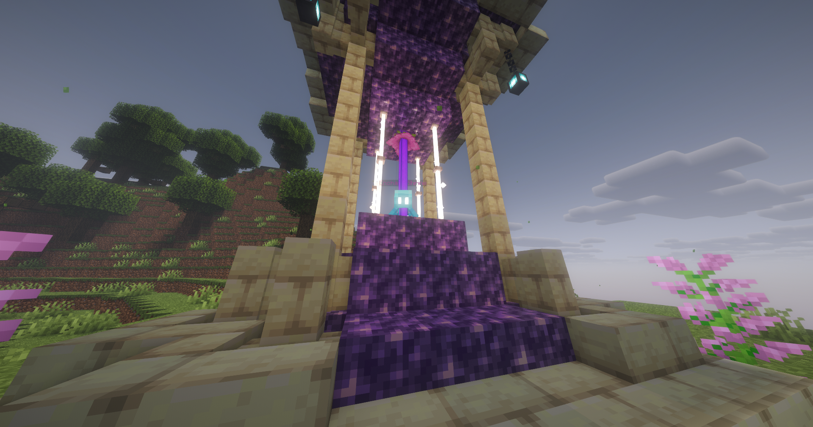
ADMIN ABUSE!
YES, THAT'S RIGHT!
Join us before, during and after update drops for free items and LOTS OF GOODIES!
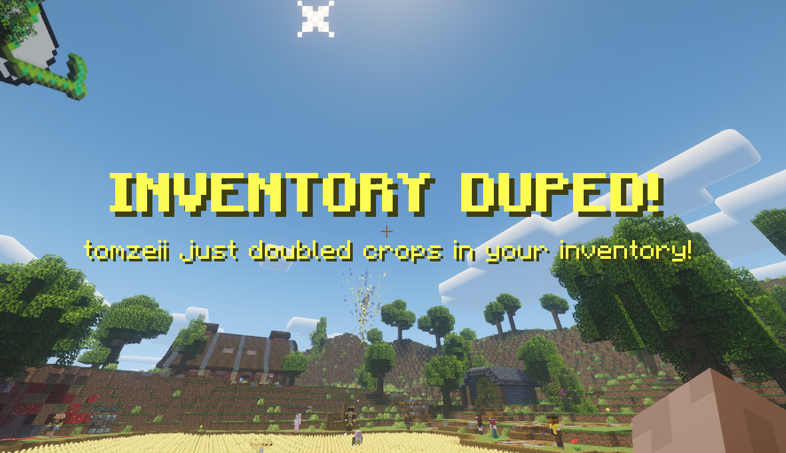
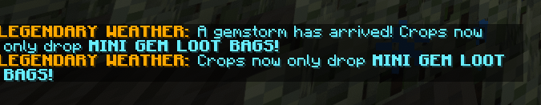
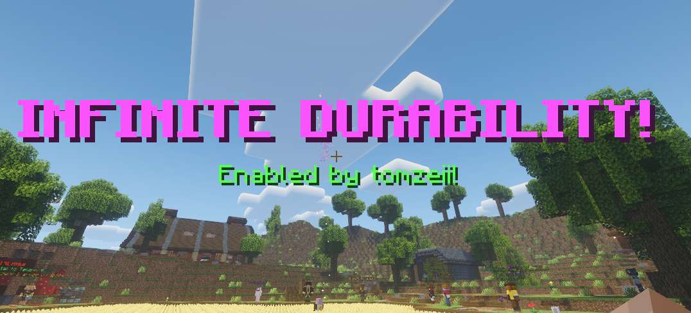
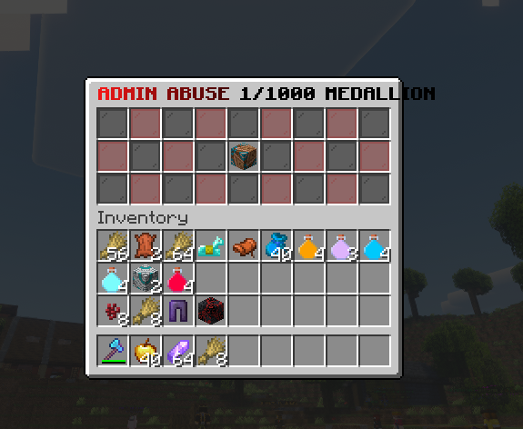
Enchant Shrine
Right-click the Enchant Shrine with your hoe in-hand to insert it!
Unlock fresh abilities and experiment with powerful hoe enchants that reshape the meta.
Each enchant brings major buffs, clever trade-offs, and new ways to push your farming to the limit.
To enchant, you'll need 1x Enchant Relic
This update adds 7 new enchants, all with an equal chance:
Lifesteal - 1% chance for Bloodied (12x) but lose half a heart
Regrowth - 0.5% chance to fully repair tool, Faded (0.5x) crop value for 1 minute after
Strong - 10% increased durability
Chaotic - 15% chance for Chaos (5x) crops, 0.5% chance for tool to lose all durability
Igneous - 90% chance for Burnt (0.1x), 10% chance for Molten (10x), only affects Nether Wart on PvP Island
Rustic - Crop value is dependent on tool durability
Windgrab - Every 2,000 crops, get Speed V and guaranteed Breezy (2x) for 5 seconds
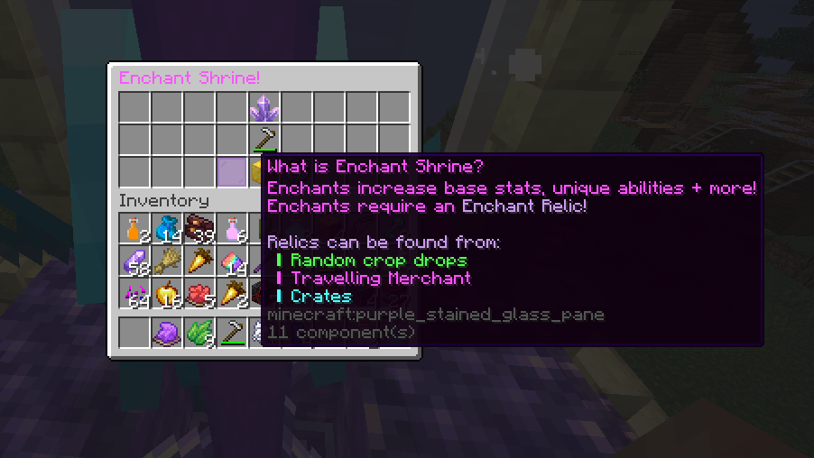
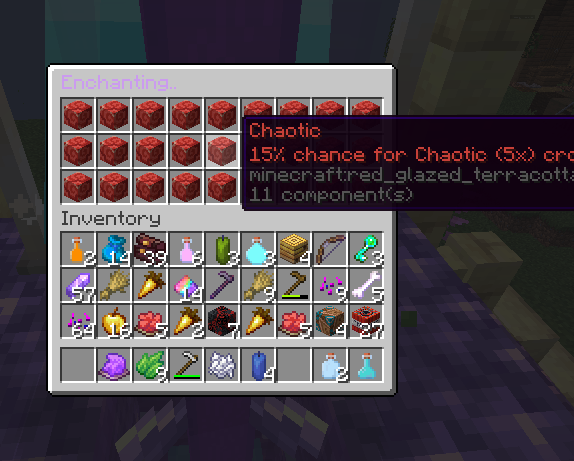
Enchant Relic
Used to enchant your hoes!
Can be found in crates, Travelling Merchant, random drops and more.
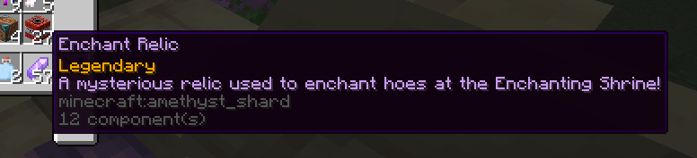
Potion Bundle
Potions GALORE! Enjoy more Tier 1 potions to upgrade.
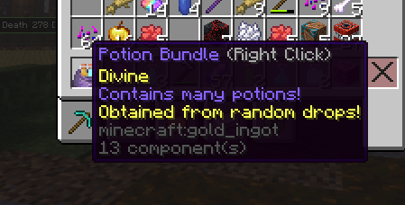
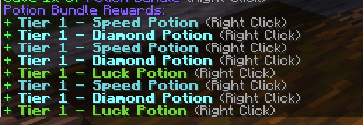
Joins Goal + Joins Crate
Everyone is getting REWARDED!
Every 50 unique joins, everyone active in-game is rewarded with the new JOINS CRATE!
Contains lots of goodies, including gem seed, water sprinkler, NEW potion bundle + more!
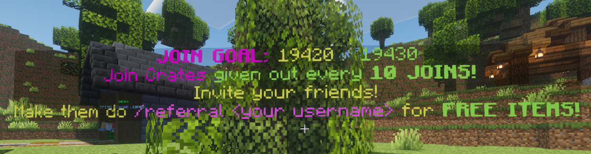
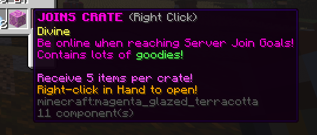
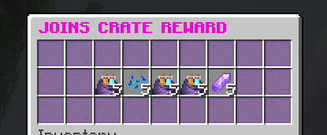
Seed Crate
Get your hands on tons of seeds and seed-related items!
Includes 3 new items: Seed Feed, Sprout Bone and Seed Magnet charm!
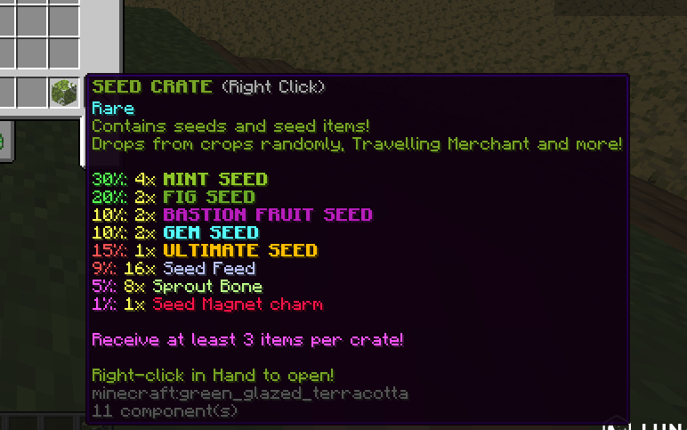
Seed Items
Grow seeds faster with these new items!
Super useful for early-game growing.
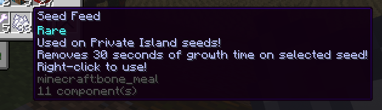
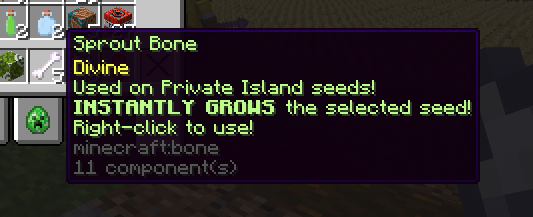
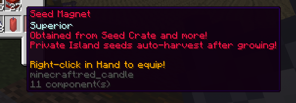
Hoe Stats
The base stats of hoes are now viewable in the lore!
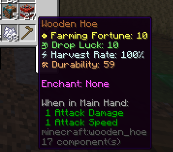
Weather System
It's getting stormy around Fertilia!
3 new possible weather conditions:
Clear - no effect
Rainy - chance for WET variant on crops
Stormy - chance for STRUCK variant on crops
Gemstorm - all crops now only drop MINI GEM LOOT BAGS
The Gemstorm weather can only be started during ADMIN ABUSE!
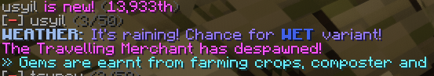
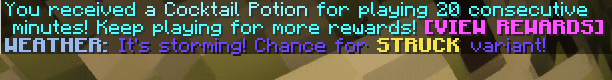
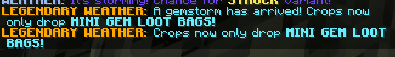
Wither Skeleton Jockey Boss
The toughest boss yet is HERE!
The Wither Skeleton Jockey boss requires 100x MOLTEN Nether Wart!
5% chance for a random piece of Withered Armor when killed!
This is intended for our late-game, grindy players!
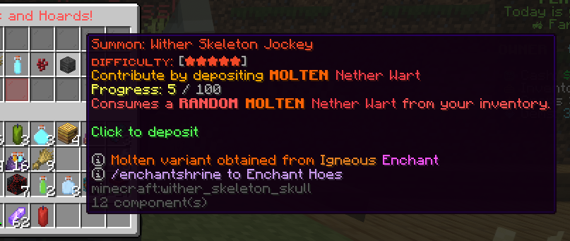
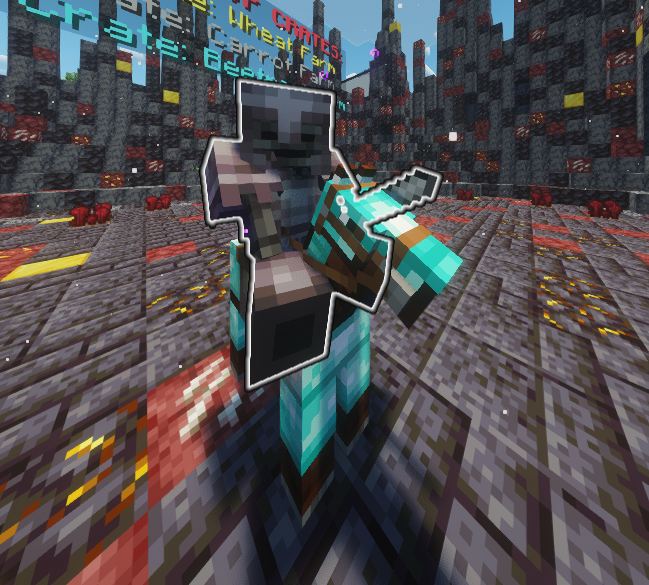
Wither Armor
Helpful with farming.. not fighting!
The new boss has a small chance to drop a random piece of Wither Armor!
Will you collect the full armorset?
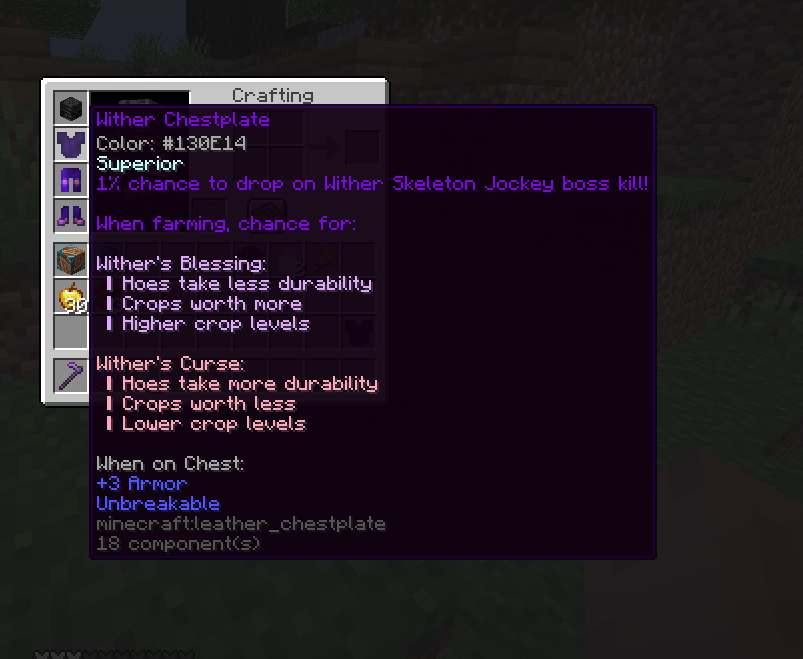
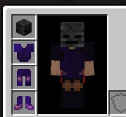
Armory Shop
Convert useless armor into Armory Points!
Receive points depending on the type and material of armor.
Accepts Leather, Iron and Diamond
Accepts Helmet, Chestplate, Leggings and Boots
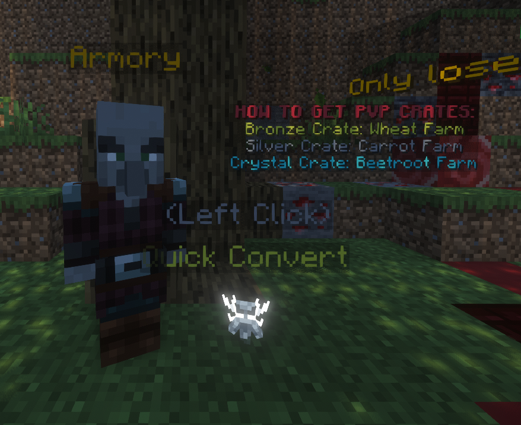
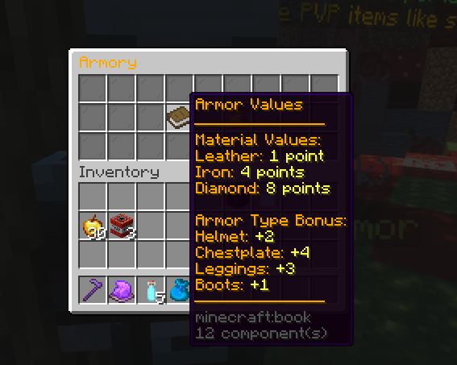
Changed
Fixed
~ It's good to be back! Next week: Christmas Event Part 1!
ps. don't miss admin abuse! :P